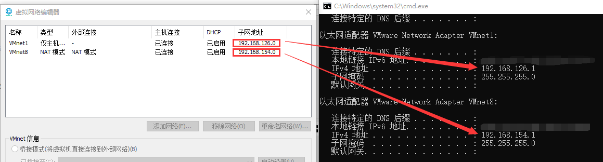
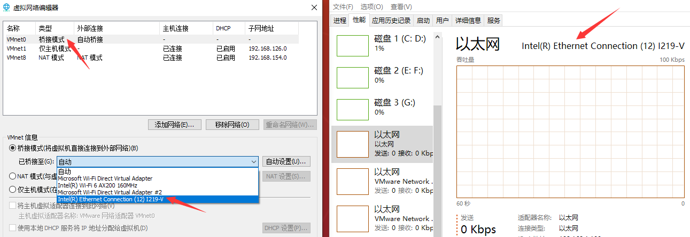
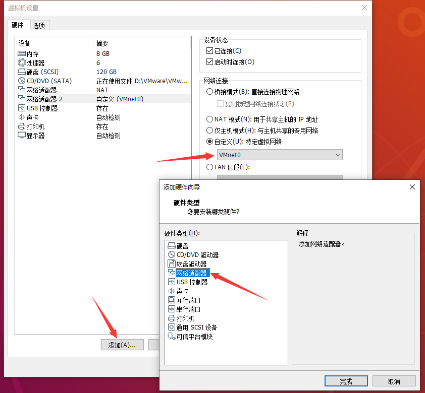
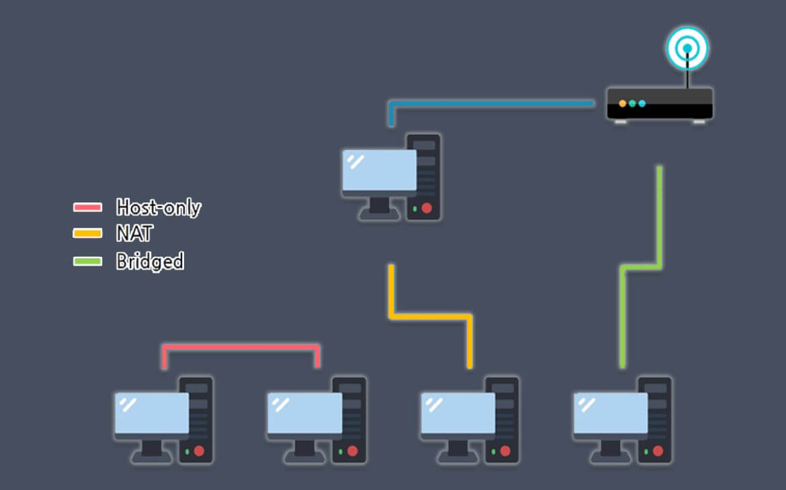
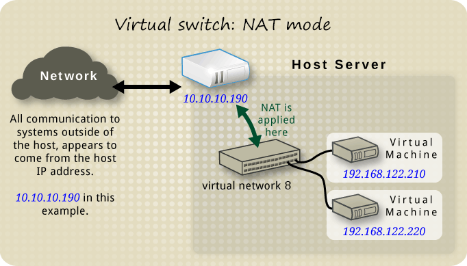
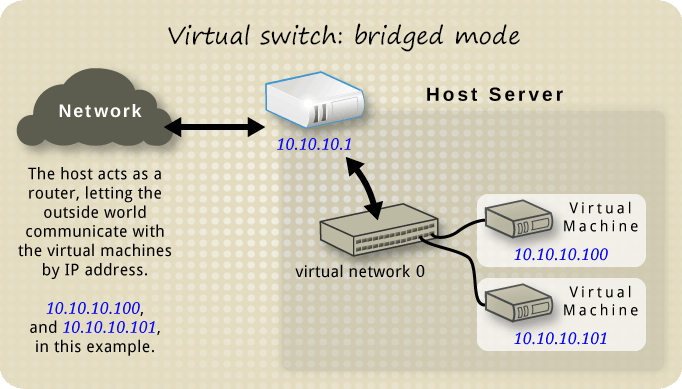
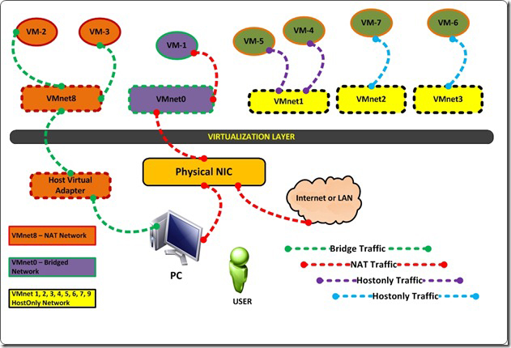

背景：主机电脑通过 WiFi 上网，网口用于跟开发板等设备有线连接；为此需要实现虚拟机内对系统可以进行外网访问网页或下载工具包等（避免切换主机操作），同时具备通过网线访问内网设备机器进行控制调试等操作。
环境：VMware® Workstation 15 Pro
平台：Ubuntu 18.04.6
# step 1：添加网卡
在虚拟机窗口栏，依次点击 编辑 -> 虚拟网络编辑器 ，可以看到原有默认的 VMnet 接口：

它们分别对应主机 ip 地址。
然后我们建立一个桥接模式的 VMnet 虚拟网络，并指定响应网卡（如出现灰屏无法设置，需要以管理员身份打开 VMware，或在当前窗口点击 更改设置 来赋予权限），然后选择对应需要进行桥接的网卡（即网口网卡）：

# setp 2：配置网络设备器
在 ubuntu 虚拟机右键点击 设置 -> 添加 -> 网络适配器 ，然后指定上面配置为桥接模式的 VMnet 虚拟网络：

# 拓展
关于 NAT（网络地址转换模式）、Host-only（主机模式）及 bridged（桥接模式）：

NAT 模式：使用 NAT 模式，就是让虚拟机借助 NAT （网络地址转换）功能，通过宿主机器所在的网络来访问外部网络，即：使用 NAT 模式可以实现在虚拟系统里访问互联网。
优点：是从虚拟机访问外部网络的最简单方法；通常，它会自动设置网络地址转换到虚拟机上，不需要在宿主机器的网络信息上配置或通过访客操作系统上进行配置。
缺点：就像路由器后面的专用网络一样，虚拟机是不可见的，无法从外部网络访问。

Host-only 模式：构建一个与外界断开连接的内部网络，只允许使用 host-only 方法的虚拟机才能通信，因此无法与外部网络或其他 PC 主机通信，只能相互通信。
优点：与内部网络一样，其不需要存在物理网络接口，相当于使用 host-only 方法的虚拟机通过双绞线直连形成网络节点进行通讯；由于无法访问外部网络，因此对于安全性来讲，比其余两种相对要高。
缺点：如其名，无法与主机外部的网络通信，同时外部网络设备也无法与其通讯。

bridged 模式：在这种模式下，虚拟系统就像是局域网中的一台独立的主机，具有自己的 MAC 和 IP 地址；由于虚拟机和宿主机器分配了相同网段的 IP，因此宿主机器和虚拟机被识别为同一级别的物理主机。
优点：虚拟机就像是一台独立的主机，拥有正常主机的网络功能，可以对外部网络进行访问，而外部网络也可以访问进来。
缺点：由于外部网络可以访问，其安全性比其余两种相对要低；因与宿主机器平等的存在于网络中，需要进行分配网络地址、子网掩码、网关等操作。

示例：
一些 VMnet 虚拟机具有特定功能：VMnet0 专用于 bridged 模式，VMnet1 专用于 host-only 模式，而 VMnet8 专用于 NAT 模式；其他的 VMnet2 等，可供虚拟机使用自定义网络模式。如图分析各模式作用：

VM-1 可以与 host PC 通信，并连接到外部 LAN or internet，但不能与 NAT 和 host-only 网络通信。
VM-2 和 VM-3 可以相互通信，也可以与 NAT 网络中的其他 VM 通信，也可以与 host PC 通信。
VM-5 和 VM-4 可以相互通信，但不能与主机操作系统和 host-only 网络中的其他 VM 通信。
VM-6 和 VM-7 无法相互通信。
参考：
What is the difference between NAT / Bridged / Host-Only networking?
VMware Workstation Networking Basics
VMWare Networking Concept [Bridged, NAT, Host Only, LAN Segment]
Perbedaan NAT Bridge Dan Host Only Di VMware Dan VirtualBox
Vmware Host-Only, NAT, Bridge 차이
Intro to Virtual Machine Networking
VMware 虛擬機器上網路連線 (Network type) 的三種模式
# setp 3：网络信息配置
从上一步可以知道我们目前有两个网络适配器，分别是 NAT 和 桥接模式，然后针对这几个模式的作用也在上面作了介绍了；因此在这里，实际只需要在虚拟机系统中配置桥接模式对应的网卡网络信息就好了；至于 NAT 模式对应的网卡网络信息将由虚拟机借助 NAT （网络地址转换）功能实现自动配置即可实现访问外网功能。
查看所有网卡信息：
ifconfig -a
ens33: flags=4163<UP,BROADCAST,RUNNING,MULTICAST> mtu 1500
inet 192.168.154.133 netmask 255.255.255.0 broadcast 192.168.154.255
inet6 fe80::b52c:a0e6:1419:116b prefixlen 64 scopeid 0x20<link>
ether 00:0c:29:f0:76:35 txqueuelen 1000 (以太网)
RX packets 102259 bytes 150687397 (150.6 MB)
RX errors 0 dropped 0 overruns 0 frame 0
TX packets 13950 bytes 938511 (938.5 KB)
TX errors 0 dropped 0 overruns 0 carrier 0 collisions 0
ens36: flags=4163<UP,BROADCAST,RUNNING,MULTICAST> mtu 1500
inet 192.168.17.218 netmask 255.255.255.0 broadcast 192.168.17.255
inet6 240e:47c:680:2899:56c0:dff:d5fe:b1aa prefixlen 64 scopeid 0x0<global>
inet6 240e:47c:680:2899:18e7:3cfa:5fad:bbe prefixlen 64 scopeid 0x0<global>
inet6 fe80::a25b:a66f:67e7:3e67 prefixlen 64 scopeid 0x20<link>
ether 00:0c:29:f0:76:3f txqueuelen 1000 (以太网)
RX packets 426 bytes 474569 (474.5 KB)
RX errors 0 dropped 0 overruns 0 frame 0
TX packets 403 bytes 44762 (44.7 KB)
TX errors 0 dropped 0 overruns 0 carrier 0 collisions 0
lo: flags=73<UP,LOOPBACK,RUNNING> mtu 65536
inet 127.0.0.1 netmask 255.0.0.0
inet6 ::1 prefixlen 128 scopeid 0x10<host>
loop txqueuelen 1000 (本地环回)
RX packets 308 bytes 26853 (26.8 KB)
RX errors 0 dropped 0 overruns 0 frame 0
TX packets 308 bytes 26853 (26.8 KB)
TX errors 0 dropped 0 overruns 0 carrier 0 collisions 0
启用网卡（如已启用则跳过该步骤），其中
ens36是设置 bridged 模式的网卡。sudo ifconfig ens36 up
修改网络信息配置
cp /etc/netplan/01-network-manager-all.yaml /etc/netplan/01-network-manager-all.yaml.back # 备份
vim /etc/netplan/01-network-manager-all.yaml# Let NetworkManager manage all devices on this systemnetwork:
ethernets:
ens33:
dhcp4: truedhcp4-overrides:
route-metric: 100# addresses: [192.168.1.110/24]# gateway4: 192.168.1.1# nameservers:# addresses: [192.168.1.1]ens36:
dhcp4: trueversion: 2bridges:
br0:
interfaces: [ens36]
dhcp4: no
addresses:
- 192.168.1.110/24nameservers:
addresses: [8.8.8.8]
routes:
- to: 0.0.0.0/0via: 192.168.1.1metric: 1000# renderer: NetworkManagernetplan apply
reboot重启后查看验证网路
route -n内核 IP 路由表
目标 网关 子网掩码 标志 跃点 引用 使用 接口
0.0.0.0 192.168.154.2 0.0.0.0 UG 100 0 0 ens33
0.0.0.0 192.168.1.1 0.0.0.0 UG 1000 0 0 br0
192.168.1.0 0.0.0.0 255.255.255.0 U 0 0 0 br0
192.168.154.0 0.0.0.0 255.255.255.0 U 0 0 0 ens33
192.168.154.2 0.0.0.0 255.255.255.255 UH 100 0 0 ens33
ping baidu.com...ping host ip
...
# 关于双网卡无法上网问题
当在虚拟机网络中设置完 VMnet0 桥接的 IP 地址等信息，打开网络后，发现网络不通。
但如果关闭 VMnet0，只保留 VMnet8，网络又是可行的，由此考虑到可能是网卡优先级的配置问题。
通过上面可以发现 br0 的跃点比 ens33 的 metric 要高，而 metric 越低，其优先级越高，因此按上面操作来一般没问题的；如果这两个网卡的 metric 值反过来，那么会造成无法上网的问题，因为本身我们的有线网口是没有联网的，但优先级又比联网的网卡优先级高，所以会出现 ping 不通外网的情况。
假设需要临时调整 ip /gateway/metric 等，可以使用 route 命令，而避免更改网络配置表文件，关于 route 命令使用可看 Linux 路由表说明 。